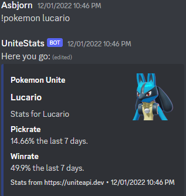
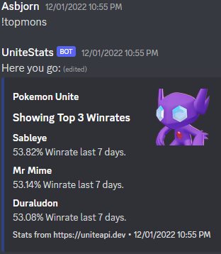

Workflow
About
Workflow was a school assignement where I implemented helpful workflow elements on an already exsisting project. The things i implemented was Github Pages, Github Actions, Cypress, Jest, ESLint, Prettier, Vite and Husky. These tools make it easier to work on a project and catches errors before they are pushed to the main branch. Husky is used to implement a pre-commit hook that runs the ESLint and prettier before a commit is made. Cypress and Jest are used to make Unit tests and E2E tests but, Github Actions is used to run the actual tests and build the project with Vite when a push is made to the main branch. Github Pages is used to host the project.
What I learned
- Git hooks
- Code tests (Unit & E2E)
- Use of a bundler
- Proper Github Actions and Github Pages usage



What I would do different
- If this was not an assignement but a real work project I would have added a bunch more tests for more functions for the website